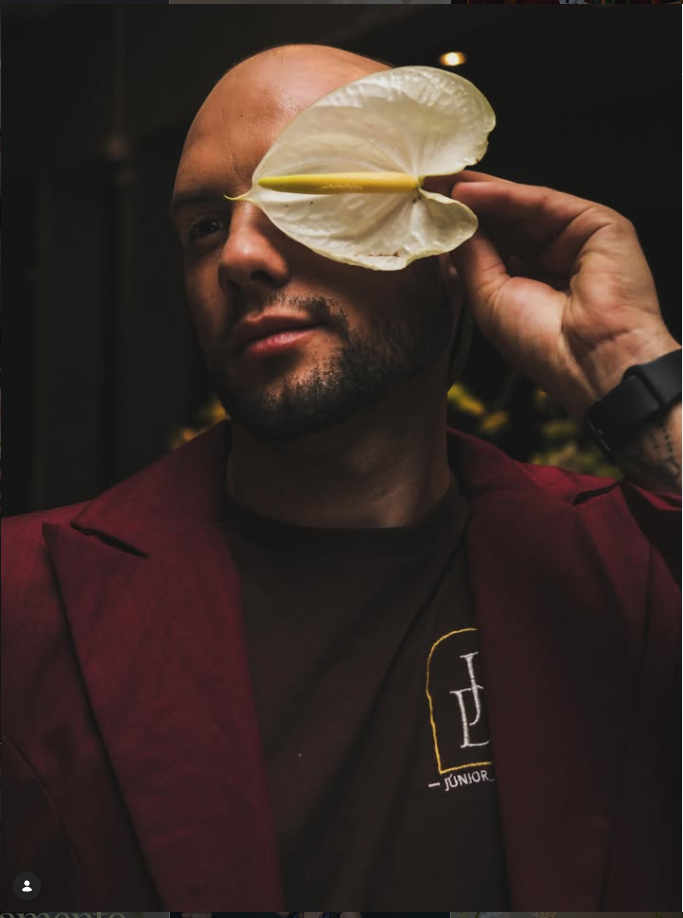

Luz & flores
Arte floral · Lavras
Decoração autoral · Lavras, Tiradentes e região
Eventos com presença, textura e intenção — do primeiro arranjo ao último detalhe.
Arte floral e cenografia para celebrações que merecem ser lembradas pela atmosfera.
Deslize para descobrirO estúdio
Júnior Décor cria cenários que acolhem, surpreendem e contam a história de quem celebra. Uma leitura sensível do espaço, traduzida em flor, luz e matéria.
Portfólio selecionado
Uma seleção de celebrações, encontros e instalações florais assinadas pelo estúdio.





Uma assinatura
Do jardim à mesa posta, cada escolha cria continuidade: a luz, a textura da madeira, o perfume das flores e a pausa certa para o olhar.
Como fazemos
Entendemos o momento, o lugar e a sensação que você quer deixar em quem chega.
Construímos uma proposta visual com flores, cores, mobiliário e luz em conversa.
Montamos tudo com precisão para que, no dia, você só precise viver a celebração.
Vamos criar?
Conte a data, o lugar e o que você imagina. Júnior responde pessoalmente pelo WhatsApp ou Instagram.